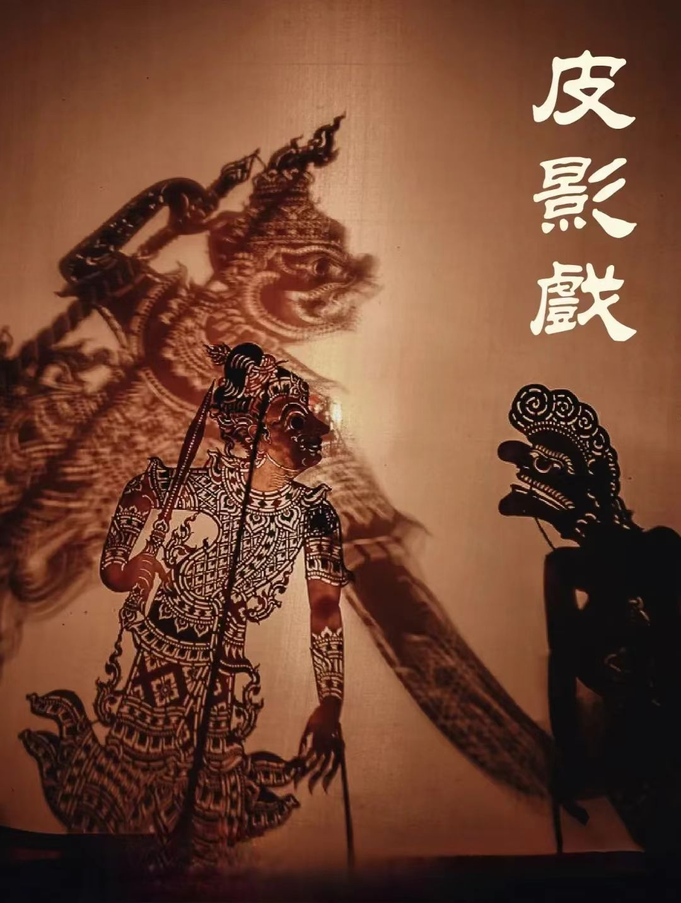
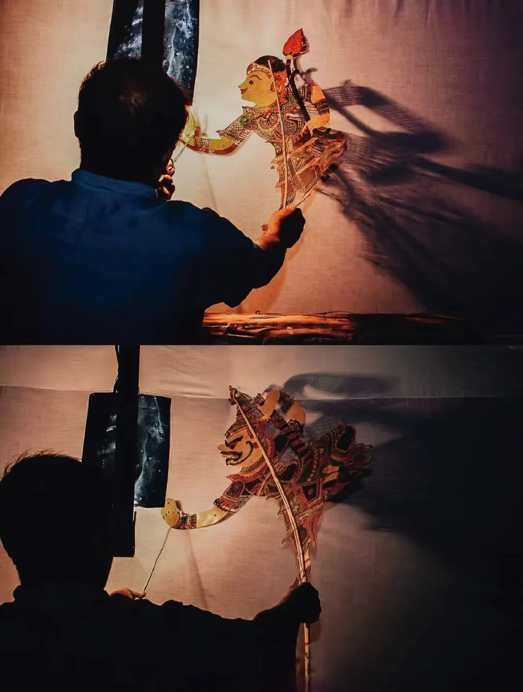
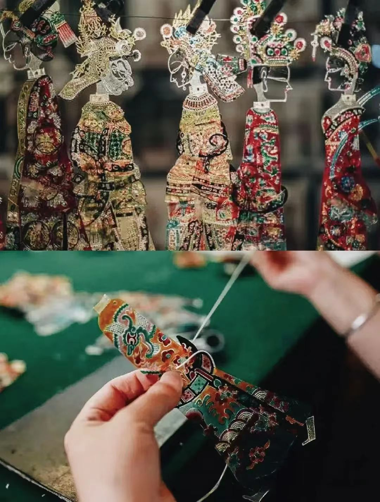
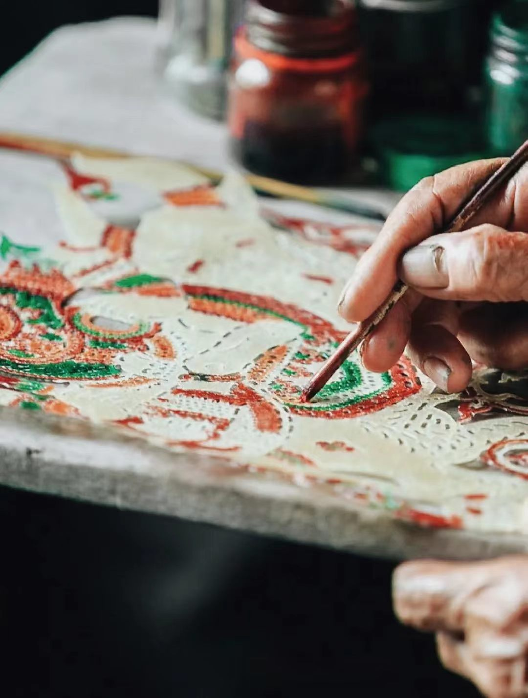

📸 主图介绍
经典关中牛皮成套皮影人物，选用三年黄牛皮经泡、削、雕、绘二十余道古法工序制成，镂空纹样繁复精巧。依托白布灯影投射演绎历史戏曲，集雕刻绘画、操纵表演、地方唱腔于一体，是世界公认电影艺术雏形，兼具舞台表演与独立美术收藏价值。
皮影戏精品作品数字画廊




🖼️ 四幅作品数字化解析
四张图片完整覆盖皮影四大创作赛道：传统武将、文旦人物、神话鬼怪、现代国潮文创。横向对比直观展示南北皮影工艺差异：北方皮影厚重粗犷、色彩浓烈；南方皮影轻薄剔透、镂空繁复，完整梳理汉代起源、唐宋兴盛、明清多流派发展脉络。
💡 数字化收藏保存小贴士
牛皮皮影极易干燥开裂、受潮发霉、虫蛀脱色，高清扫描+矢量数字存档永久留存纹样；纯手工老皮影收藏价值远高于机器量产；数字皮影动画、光影互动装置、轻量化文创周边、AR皮影互动程序已解决传统皮影保存难、传播门槛高痛点。
皮影戏
皮影戏又称灯影戏，是集雕刻、彩绘、操纵、地方戏曲唱腔于一身的复合型国家级非物质文化遗产，距今已有两千余年完整传承脉络。汉代出现雏形，唐宋城乡广泛兴盛，明清分化关中、唐山、海宁、江汉等数十个特色流派，借灯光投射白布形成动态画面，被海外公认为现代电影银幕艺术的雏形。
整套工艺包含选皮、泡皮、削薄、阴干、起稿、镂空雕刻、矿物颜料彩绘、上蜡固色八大核心工序，人物造型遵循“忠良雕正貌、奸邪刻丑形”的传统审美，剧目取材三国演义、封神榜、民间传说，依靠灯影与唱腔讲述故事，兼具娱乐教化双重作用。
皮影戏行业数字化数据分析
全国皮影文化传承地域分布占比
皮影文化爱好者受众年龄分层调研
🎭 皮影戏千年文化内核与当代数字化价值
皮影是独属于东方的光影叙事艺术，灯光、剪影、唱腔三位一体，承载千年民间善恶价值观。传统仅乡间戏台演出，如今数字化全面赋能皮影产业：线下亲子皮影剧场、数字皮影动画短片、校园手工雕刻课堂、文旅实景光影秀、AR线上互动皮影、海外国风数字艺术巡展同步落地，是老少皆宜、传播门槛极低的经典非遗IP。
🛠️ 全套古法皮影雕刻工具体系
黄牛/驴皮、泡皮大缸、削皮刀具、镂空雕刀、矿物彩绘颜料、上蜡工具、高清扫描设备、数字皮影动画建模软件、AR光影交互程序
🎬 南北两大皮影工艺体系
北方皮影（陕西/河北）皮厚色浓、造型粗犷、重戏曲叙事；南方皮影（浙江/湖北）皮薄剔透、镂空繁复、侧重装饰美感
📜 完整千年传承发展脉络
汉代光影雏形起源→唐宋城乡全民兴盛→明清多流派工艺定型→近现代艺人断层修复→当代数字光影文创创新发展
🌟 数字化创新应用场景
线下亲子皮影剧场、数字皮影动画短片、校园雕刻美育课、文旅夜间光影实景秀、AR线上互动皮影、海外国风数字艺术展
💬 用户数字化留言交流区